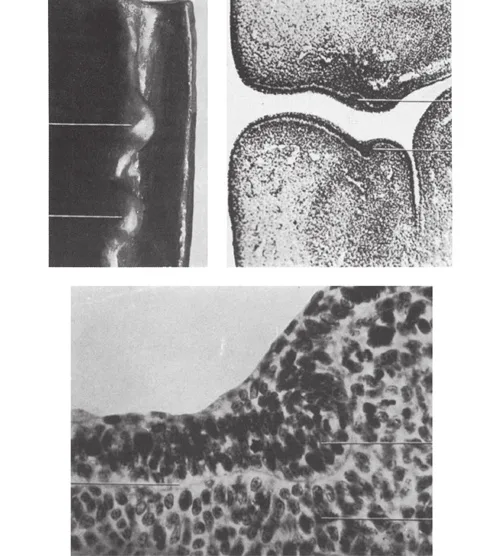
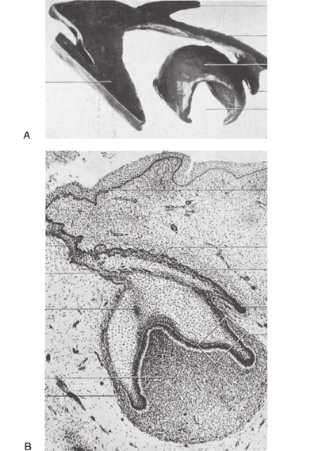

نسخه استخراجشده؛ ترجمه یا تأیید علمی انجام نشده است. وضعیت: captured
همهچیز از لامینا دنتال شروع میشود؛ نواری از اپیتلیوم که در هفتهی ششم جنینی داخل مزانشیم فرو میرود:
جوانه (Bud): تودهی سلولی ساده — مرحلهی تکثیر.
کلاهک (Cap): فرورفتگی ایجاد میشود و سه ساختار کلیدی جدا میشوند.
زنگوله (Bell): تمایز بافتی و شکل نهایی تاج اینجا تعیین میشود.
رسوب و بلوغ: ماتریکس گذاشته و سپس معدنی میشود.
سه ساختار و سه سرنوشت:
ارگان مینا ← آملوبلاست ← مینا
پاپیلای دندانی ← ادنتوبلاست ← عاج و پالپ
فولیکول دندانی ← سمان، لیگامان پریودنتال و استخوان آلوئول
نکتهی کلیدی:عاج همیشه اول ساخته میشود. رسوب عاج است که آملوبلاست را برای ساخت مینا فعال میکند — یک القای متقابل.

اگر بدانی هر مرحله چه کاری میکند، میتوانی حدس بزنی هر آنومالی از کدام مرحله میآید:
شروع (Initiation): اگر جوانه ساخته نشود ← دندان غایب؛ اگر اضافه ساخته شود ← دندان اضافه.
تکثیر (Proliferation): اختلال در تعداد و ادغام جوانهها ← ادنتوما، دوقلویی و اتصال دندانها.
تمایز بافتی (Histodifferentiation): سلول درست کار نمیکند ← آملوژنزیس و دنتینوژنزیس ایمپرفکتا.
تمایز شکلی (Morphodifferentiation): شکل غلط ولی بافت سالم ← دنس این دنته، تاورودنتیسم، لترال میخی.
رسوب و معدنی شدن: کمیت یا کیفیت ماتریکس مختل میشود ← هیپوپلازی و هیپوکلسیفیکاسیون مینا.
قاعدهی طلایی تشخیص: نقص مقدار مینا یعنی هیپوپلازی (حفره و شیار)، نقص کیفیت معدنی شدن یعنی هیپوکلسیفیکاسیون (لکهی رنگی با ضخامت طبیعی).
